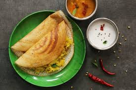

HOME
MASALA DOSA

Description
Masala dosa is a popular South Indian breakfast dish of a crispy fermented rice and lentil crepe served with
potato curry, chutney, and sambar. It's believed to have originated in the Tuluva Mangalorean cuisine of
Karnataka, India
Ingredients
For the Dosa Batter:
- 1 cup rice
- 1/4 cup split urad dal (black gram dal)
- 1/4 tsp fenugreek seeds (optional)
- 1 1/2 cups water (or as needed)
- Salt to taste
For the Potato Filling (optional):
- 3-4 medium potatoes, boiled and mashed
- 1 small onion, finely chopped
- 1-2 green chilies, chopped (optional)
- 1 tsp ginger, grated
- 1/2 tsp mustard seeds
- 1/2 tsp cumin seeds
- 1/4 tsp turmeric powder
- 1/2 tsp chili powder (optional)
- 1/4 cup fresh cilantro, chopped
- Salt to taste
- 2 tbsp oil
Steps
1. Prepare the Dosa Batter:
- Wash the rice, urad dal, and fenugreek seeds (if using) thoroughly.
- Soak the rice and dal separately in water for 6-8 hours or overnight.
- Drain the soaked rice and dal and blend them together with a little water until you get a smooth batter. You
can adjust the water quantity to get a pancake-like batter consistency.
- Let the batter ferment for 12-24 hours in a warm place until it rises and becomes slightly bubbly.
- Add salt to taste once the batter is fermented, and mix it well.
2. Prepare the Potato Filling (optional):
- Heat 2 tbsp oil in a pan and add mustard seeds. Let them splutter.
- Add cumin seeds, green chilies, and ginger. Sauté for a minute.
- Add chopped onions and sauté until they turn golden brown.
- Now add turmeric powder and chili powder (optional), and mix well.
- Add the mashed potatoes, salt, and cilantro. Mix everything well and cook for 2-3 minutes. Remove from heat
and set aside.
3. Cook the Dosas:
- Heat a non-stick or cast-iron griddle/tawa over medium heat. Lightly grease it with oil or a paper towel.
- Once the griddle is hot, pour a ladle of the dosa batter in the center and spread it out in a thin, circular
motion.
- Drizzle a little oil around the edges of the dosa and let it cook for 2-3 minutes until the edges turn
crispy and golden brown.
- If you are making stuffed dosas, place a spoonful of the prepared potato filling in the center of the dosa.
- Fold the dosa into half or roll it up and remove it from the griddle.
- Serve the dosa hot with chutneys and sambar.
4. Serve:
Serve your crispy dosas with coconut chutney, tomato chutney, or sambar. Enjoy your homemade dosas!